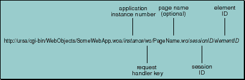
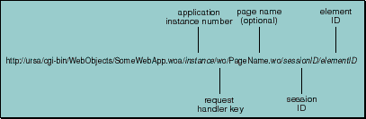
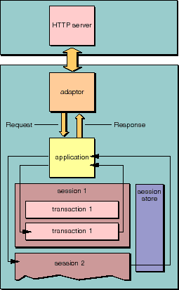
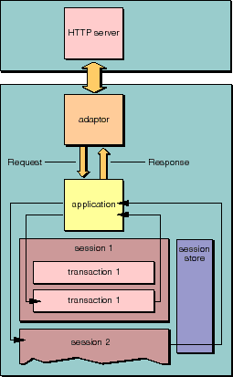

 Figure 23. Component Action Request URL This URL contains all of the information necessary to restore the state of the existing session. The session ID comes right after the page name in the URL (the page name is optional; if it isn't present in the URL, the session ID comes right after the request handler key). Because sessions are designed to protect the data of one user's transactions from that of another, session IDs must not be easily predicted or faked. To this end, WebObjects uses randomly generated 17-character sequence of letters and numbers. (You can also override WOSession's sessionID method and implement another security scheme if you'd like.) The application keeps active sessions in the WOSessionStore object. The application object uses the session ID to retrieve the appropriate session from the session store (see Figure 24). The appropriate session object is then sent the awake message to prepare it for the request.

Figure 23. Component Action Request URL
 Figure 24. Associating a Request with a Session Object

Figure 24. Associating a Request with a Session Object
Table of Contents Next Section
 Table of Contents
Table of Contents  Next Section
Table of Contents
Next Section
Table of Contents  Previous Section
Table of Contents Next Section
Previous Section
Table of Contents Next Section